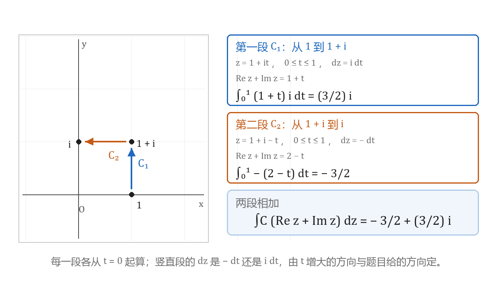
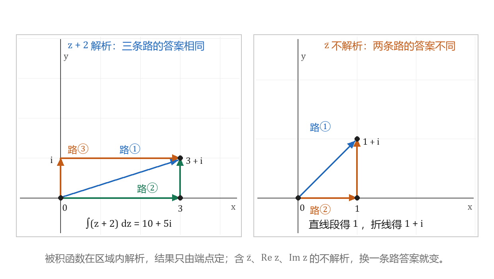

复积分的概念与直接计算
本节目标：能用参数化法直接算出一段曲线上的复积分。
卷面怎么考
本章在公开试卷上有三处位置，三处考的都是算。
- 解答题第 3 题，5～7 分：沿一段折线或一段参数曲线求积分。合肥工业大学连续四套卷的这道题分别是：沿 i\to i-\pi\to-\pi 的折线求 \int_C\cos^2 z\,dz；沿 1\to 1+i\to i 的折线求 \int_C(\operatorname{Re}z+\operatorname{Im}z)\,dz；沿单位圆从 1 逆时针转到 i 的圆弧求 \int_C\frac{dz}{z}。
- 填空与选择，3～4 分：给一条正向闭曲线，填 \oint_C 的值，被积函数是 z、\bar z 或 \frac1z 的有限项组合。
- 概念简答，3 分：「复积分的计算方法或公式有哪些」。参考答案罗列了八条，头两条是列出参数方程 z=z(t) 把积分写成 t 的积分，以及单连通区域内解析函数的积分用原函数计算。
本课把第 3 题的两条路分开练：曲线能参数化就用参数化硬算；被积函数解析，就先看能不能用原函数代端点。填空里的闭路积分下一节才展开，本课只要求会用参数化算出 \oint\frac{dz}{z}=2\pi i 这一个结果。
唤醒：参数化与定积分
一段曲线用一个参数 t 描述：
t 从 \alpha 增到 \beta 的方向就是曲线 C 的方向。卷面上出现的有两种：
- 从 z_0 到 z_1 的直线段：z(t)=z_0+(z_1-z_0)t，0\le t\le 1。
- 半径为 r 的圆弧：z(t)=re^{it}，t 从起点的辐角到终点的辐角。逆时针走时 t 增大。
沿曲线做的定积分按实部虚部拆成两个实积分：
计算只剩两个动作：把 z 换成 z(t)，把 dz 换成 z'(t)dt。剩下的定积分按实函数的方法算，出现的原函数都是 \sin、\cos、e^{at}、t^n 这一级。
计算里反复用到三条复数关系：
代入 z=re^{i\theta} 得 \bar z=re^{-i\theta}、\frac1z=\frac1r e^{-i\theta}。这两条把含 \bar z 与 \frac1z 的被积函数也变成指数函数；指数函数相乘时指数相加，积分立刻化成一元定积分。
积分的定义
复积分的定义与定积分同形。在 C 上按方向依次取分点 z_0,z_1,\dots,z_n（z_0 是起点、z_n 是终点），第 k 段的弧长记 \Delta s_k，在每段上任取一点 \zeta_k，作和
当 \max\Delta s_k\to 0 时这个和趋于一个与分点、与 \zeta_k 取法都无关的复数，就称它为 f 沿 C 的积分：
这个量称为 f 沿 C 的复积分。C 闭合时记号写作 \oint_C。
把 f=u+iv 与 dz=dx+i\,dy 代进定义，可以得到它与实函数曲线积分的联系：
这一式在卷面上几乎不用。它的用处是说明方向、分段与线性这几条性质与高等数学里的第二型曲线积分一致，不必重新记一套。
| 性质 | 写法 |
|---|---|
| 线性 | \int_C(\alpha f+\beta g)\,dz=\alpha\int_C f\,dz+\beta\int_C g\,dz |
| 方向反转变号 | \int_{C^{-}}f\,dz=-\int_C f\,dz |
| 分段可加 | C=C_1+C_2 时 \int_C f\,dz=\int_{C_1}f\,dz+\int_{C_2}f\,dz |
| 模的估计 | \left\lvert\int_C f\,dz\right\rvert\le\int_C\lvert f\rvert\,\lvert dz\rvert |
方向反转变号的理由只有一句：沿 C^{-} 走时每个 \Delta z_k 的方向都与原来相反，取极限后整体差一个负号。
参数化计算法
参数化的三件事固定成三行：
- 写出 z=z(t) 与 t 的范围。
- 求导得 dz=z'(t)\,dt。
- 把被积函数里的 z 全换成 z(t)，常数不动。
第 2 行是最容易漏的一步。漏掉 z'(t)dt、直接对 f(z(t)) 关于 t 积分，得到的是另一个量，卷面上还看不出错在哪。
例（2025 年卷，5 分）：C 是从 1 沿单位圆 |z|=1 逆时针转到 i 的圆弧，求 \int_C\frac{dz}{z}。
曲线是 z=e^{i\theta}，\theta 从 0 到 \frac{\pi}{2}；dz=ie^{i\theta}d\theta；被积函数 \frac1z=e^{-i\theta}。代入：
参考答案按「参数方程 2 分、dz 1 分、算完 2 分」给分，其中 e^{-i\theta} 与 e^{i\theta} 相乘得 1 这一步要写出来。
同一个被积函数走一整圈，\theta 从 0 到 2\pi：
这个 2\pi i 在本章后面反复出现。本课把它当参数化的结果记住；它为什么恰好是 2\pi i，下一节由柯西积分公式说明。
被积函数含 \bar z 时同样代入。C 为上半单位圆周从 1 到 -1，求 \int_C\bar z\,dz：
沿折线分段算
折线由几段直线接成，参数化按段进行，每段各自从 t=0 起算，最后相加。
例（2024 年卷，6 分）：C 为从 1 到 1+i 再到 i 的折线段，求 \int_C(\operatorname{Re}z+\operatorname{Im}z)\,dz。
被积函数是 \operatorname{Re}z+\operatorname{Im}z=x+y，含 x 与 y 的式子不能当成 z 的解析函数处理，分段算。
第一段 C_1，从 1 到 1+i，取 z=1+it，0\le t\le 1：
第二段 C_2，从 1+i 竖直向下到 i，取 z=1+i-t，0\le t\le 1：
两段相加：

assets/img/gen/复积分-参数化计算-折线分段-本机-01.py），许可：本项目自产）参考答案的给分是「分段计算 1 分，每段的参数式与 dz 各 1 分，两个定积分各 1 分，相加 1 分」，六分全在这些动作上。
三个容易出错的地方：
- 第二段接着第一段的 t 往下算。两段的 t 各从 0 起，互不相干。
- 竖直段 dz 的符号。写成 z=1+i-t 时 dz=-dt；写成 z=i+t 时 dz=dt，但这时 t 从 0 到 1 对应的是从 i 到 1+i，方向与题目给的反了。
- 漏掉一段。最后一行必须是两段之和。
闭合路径的方向
闭曲线要定方向。沿曲线走时区域保持在左手边，这个方向称为正向；圆、方框、椭圆这类简单闭曲线的正向就是逆时针。同一条曲线反向走一遍，积分差一个负号。
两个闭路积分可以直接写出来：
第一条用参数化验一遍：z=e^{i\theta}，dz=ie^{i\theta}d\theta，
末一步用了 e^{4\pi i}=1。第二条是上面算过的结果。
两条的答案形态不同，区别落在被积函数在圈内有没有奇点。这一条下一节成为柯西积分定理与柯西积分公式的分界，本课只要求会算。
方向写反时两条都变号：\oint_{C^{-}}\frac{dz}{z}=-2\pi i。填空题里 \oint 这个记号已经含了方向，答案按正向给。
图像画廊的实验四会把围道 C 与极点画在同一张复平面上，标出 C 把哪些奇点圈在里面。圈内外的个数一确定，\oint_C 的值就由圈内留数之和给出。本课练的 \oint\frac{dz}{z}=2\pi i 是这张图上最简单的一例：圈内只有一个极点 0，它的留数是 1。
原函数代端点
若 f 在包含 C 的一个区域内解析，则 f 在该区域内有原函数 F（即 F'=f），且
z_0 与 z_1 是 C 的起点与终点。右端只用到两个端点，与 C 的形状无关，这就是积分与路径无关。这一条在下一节由柯西积分定理给出，本课先把它当计算规则：先判被积函数解析，解析就只用原函数代端点。
例（2022 年卷，6 分）：C 为从 i 到 i-\pi 再到 -\pi 的折线，求 \int_C\cos^2 z\,dz。
\cos^2 z 在复平面上解析。先用半角公式降次：
起点 i、终点 -\pi，中间那个拐点 i-\pi 不参与计算：
把 \sin 2i=i\sinh 2=\frac{i(e^2-e^{-2})}{2} 代进去，整理得
参考答案的第一步写的就是「由于 \cos^2 z 解析」，接着是降次与原函数，折线的两段一次都没有出现。这道题在整份卷里最省时间：认出被积函数解析之后，路径形状就不影响答案。
同一个结论在填空与选择里也出现。从 0 到 3+i 求 \int_C(z+2)dz，被积函数是多项式，沿直线、沿实轴折一次、沿虚轴折一次三条路都得
参数曲线同样只看端点。2024 年卷的选择题：有向曲线 C:z(t)=\sin 2t+2i\cos t，t\in[0,\pi]，则 \int_C z\,dz 等于（A）0（B）-2i（C）-4i（D）4i。被积函数 z 的原函数是 \frac{z^2}{2}，端点 z(0)=2i、z(\pi)=-2i，两端代入得
选 A。这条曲线是椭圆的一段，参数式复杂，端点却一算就出。
什么时候不能代端点
含 \bar z、\operatorname{Re}z、\operatorname{Im}z、|z| 的被积函数不解析，原函数那条路走不通，只能参数化。同一对端点换一条路，结果就变。从 0 到 1+i 求 \int_C\bar z\,dz：
- 沿直线段，z=t+it：\bar z=t-it，dz=(1+i)dt，被积函数乘以 dz 得 2t\,dt，积分得 1。
- 先沿实轴到 1、再竖直上去：实轴段 \int_0^1 t\,dt=\frac12；竖直段 z=1+it，\bar z=1-it，dz=i\,dt，\int_0^1(i+t)\,dt=\frac12+i；两段合计 1+i。
两条路给出两个值，\bar z 因此没有原函数。

assets/img/gen/复积分-原函数-路径无关对照-本机-02.py），许可：本项目自产）判据只有一句：被积函数写成 z 的解析表达式（多项式、e^z、\sin z、\cos z、\frac{1}{z-z_0} 这类）就能代端点；出现 \bar z、x、y、|z| 就是参数化的活。
估值不等式
最后一条用来给上界。若 |f(z)|\le M 在 C 上处处成立，C 的长度为 L，则
这一条叫估值不等式；公开卷的参考答案把它写作「长大不等式」，指的是同一件事。做法两步固定：先在 C 上估 |f| 的上界 M，再乘 C 的长度 L。
例：估计 \left\lvert\oint_{|z|=1}\frac{dz}{z^2+3}\right\rvert。
在 |z|=1 上，由 |z^2+3|\ge 3-|z|^2=2 得
圈长 L=2\pi，于是
这类题只要上界。写答案时把 M 与 L 分开写清楚，别在 L 上混进 2\pi i。
轻量练习
三条各算一遍，写在工作本上，每条只留一行结果。
- 把 \int_C\bar z\,dz（C: z=e^{i\theta}，0\le\theta\le\frac{\pi}{2}）写成 \theta 的定积分并算出值。代换完成后被积函数只剩指数函数相乘，结果是 \frac{\pi i}{2}。
- 用原函数算 \int_C(z+2)dz，C 从 0 到 3+i。三种走法任选一条，答案都是 10+5i；折线的中间点不必写。
- 把第 2 题的被积函数换成 \bar z+2，沿同一条直线段再算一次：z=(3+i)t，\bar z=(3-i)t，dz=(3+i)dt，被积函数乘以 dz 后只剩实数项，结果是 11+2i。与 10+5i 不等，端点法在含 \bar z 的题上就此失效。
做完把「什么时候用参数化、什么时候用原函数」这一行写进纸笔题型整理册的选型卡；柯西定理与柯西积分公式学完后，这张卡上会多出两条路，本章四节正好凑成四条。
带走的公式卡
| 题面给什么 | 用哪条 | 卷面位置 |
|---|---|---|
| 一段曲线（直线、折线、圆弧），被积函数含 \bar z、\operatorname{Re}z、\operatorname{Im}z | 参数化：写 z(t)，dz=z'(t)dt，折线按段相加 | 解答题第 3 题 |
| 被积函数是 z 的解析表达式，题只给端点 | 原函数代端点 F(z_1)-F(z_0) | 解答题第 3 题 |
| 正向闭曲线 | 逆时针为正向；\oint z\,dz=0，\oint\frac{dz}{z}=2\pi i | 填空、选择 |
| 要一个上界 | \left\lvert\int_C f\,dz\right\rvert\le ML | 填空、证明小题 |
- 李君、于非非《复变函数与积分变换》§2.1 复变函数积分的概念
- 合肥工业大学期末试卷（含答案与逐题分值）
- 复变积分解题集 B 集习题（西安建筑科技大学，按节分组）